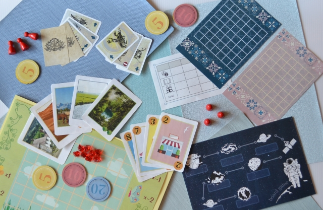

ボードゲーム
ボードゲームといえば、オセロや将棋、麻雀などが有名です。
一方で、遊びにくさ、ルールがしられていないことなどが原因で遊ばれない数多くのボードゲームがあります。
このページでは、それらのボードゲームを分類に分け、ご紹介していこうかと思います。興味がわいた作品がありましたら、是非チェックしてみて下さい。

ボードゲームの魅力
ボードゲームの魅力とは、一言でいえば達成感です。
他プレイヤーとの駆け引き、カードやさいころで何を引くかなどの運、
自身の経験からの適切な判断をうまく組み合わせ、勝利へと進めていく。
はたまた、ほかのプレイヤーとわいわい遊べる話のタネに。いろいろな理由でお勧めできるゲームです。
また、攻略の定石はありますが、それが正解になるとは限らないため、常に考えていくことが大切になります。
今回は紹介してはいませんが、一人用のボードゲームなどもあります。
何から遊べばいい？
最初のゲームとしては、サクッと楽しめる小型か、思考を巡らせることで達成感が得られやすい中型がおすすめです。
その中でも、カタンやドミニオンはお勧めの作品なので、そちらから始めてみてはいかがでしょうか。